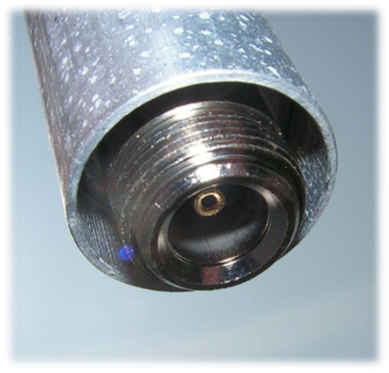
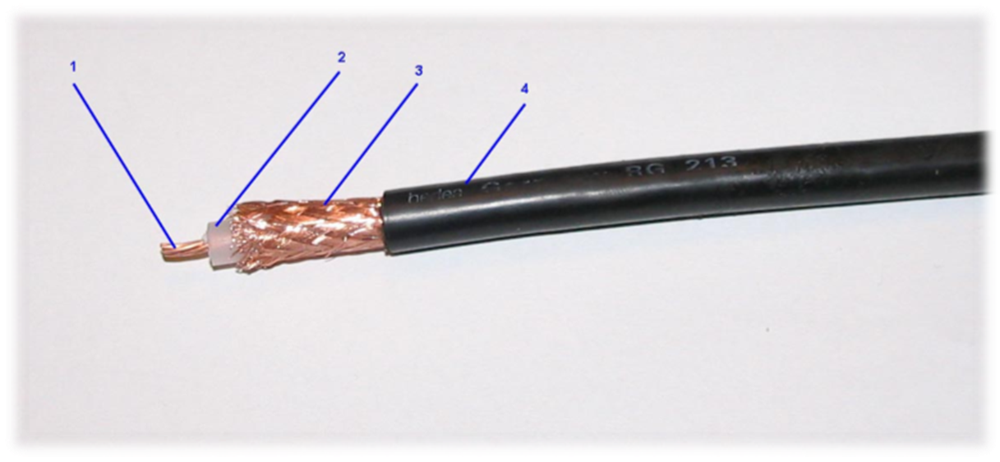
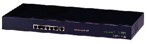
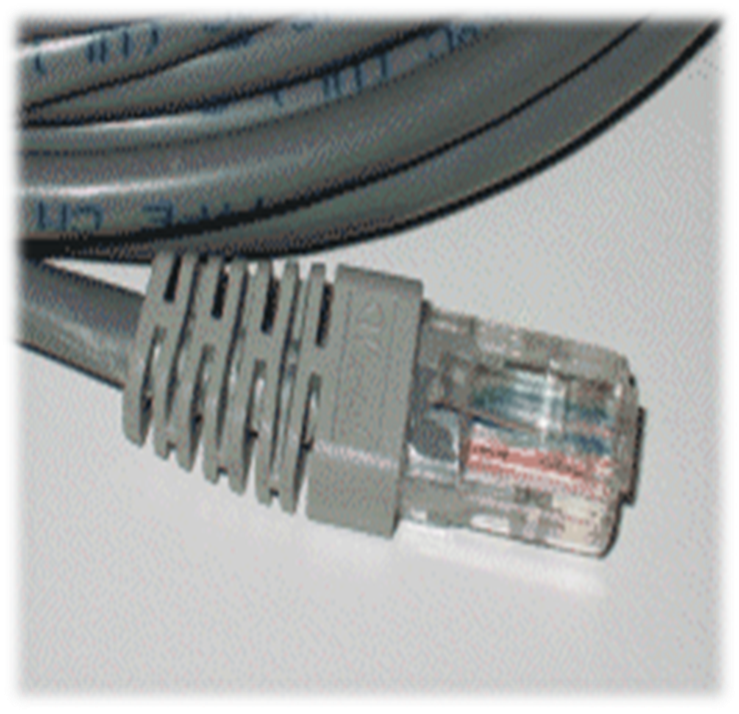
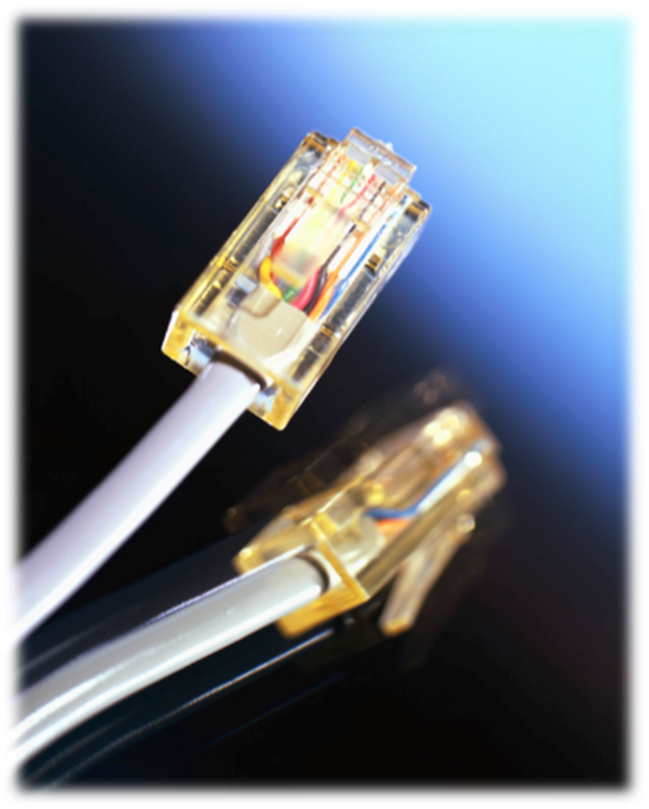

<!-- .slide: class="title-slide" --> # Warstwa fizyczna: przekaz elektryczny ## Kable miedziane w telekomunikacji i teleinformatyce --- ## Plan wykładu - kabel koncentryczny i jego złącza, - para skręcona: budowa, rodzaje i zastosowania, - kable specjalne, - RJ-45 oraz Token Ring. --- <!-- .slide: class="section-slide" --> # Kabel koncentryczny --- ## Budowa kabla koncentrycznego <div class="columns"><div> <div class="packet"><span>Przewód miedziany</span><span>Izolacja wewnętrzna</span><span>Oplot / ekran</span><span>Powłoka zewnętrzna</span></div> - Angielska nazwa: *coaxial cable*. - Ekran ogranicza wpływ zakłóceń elektromagnetycznych. - W sieciach komputerowych został w większości wyparty przez skrętkę. </div><div>  </div></div> --- ## Złącza koncentryczne <div class="columns"><div> **BNC** *Bayonet Neill-Concelman*; dawniej sieci koncentryczne, dziś nadal aparatura pomiarowa. </div><div> **N** Złącze stosowane dla sygnałów wysokiej częstotliwości, do około 18 GHz. </div><div> <img src="media/image4.png" alt="Złącze BNC" height="170"> <img src="media/image5.png" alt="Złącze N" height="170"> <p></p> <p></p> <p></p> </div></div> --- <!-- .slide: class="section-slide" --> # Para skręcona --- ## Skrętka: podstawy <div class="columns"><div> - Angielska nazwa: *twisted pair*. - Osiem miedzianych żył tworzy cztery pary. - Każda para jest skręcona w odmienny sposób, co ogranicza przesłuchy i zakłócenia. - Izolacja żył jest zwykle polietylenowa, a wspólna powłoka z PVC. </div><div>  </div></div> --- ## Gdzie stosujemy skrętkę? <div class="columns"><div> - sieci telefoniczne, - sieci komputerowe, - okablowanie strukturalne w budynkach. Jej popularność wynika z dobrego stosunku możliwości do ceny oraz łatwości instalacji. </div><div>  </div></div> --- ## Rodzaje skrętek <div class="columns"><div> | Typ | Ekranowanie | Typowe zastosowanie | | --- | --- | --- | | UTP | brak | standardowe sieci LAN | | FTP | folia i przewód uziemiający | większe zakłócenia, dłuższe odcinki | | STP | ekran, często ekranowanie par | wymagające środowiska EMC | | S/FTP | folia oraz dodatkowy ekran | wysoka odporność na zakłócenia | </div><div> <img src="media/image9.png" alt="Skrętka UTP" height="120"> <img src="media/image13.png" alt="Skrętka ekranowana" height="120"> <img src="media/image16.png" alt="Kabel ekranowany" height="120"> </div></div> --- ## UTP <div class="columns"><div> - *Unshielded Twisted Pair*. - Brak ekranowania żył. - Najczęściej stosowany kabel w lokalnych sieciach komputerowych. </div><div>  </div></div> --- ## Materiał: skrętka UTP <video controls preload="metadata" poster="media/image15.png"><source src="media/slide-017-media1.mp4" type="video/mp4"></video> --- ## FTP <div class="columns"><div> - *Foiled Twisted Pair*. - Ekranowanie folią oraz przewód uziemiający. - Większa odporność na zewnętrzne zakłócenia elektromagnetyczne. </div><div>  </div></div> --- ## STP i S/FTP <div class="columns"><div> - **STP:** ekran w postaci oplotu oraz powłoki; możliwe indywidualne ekranowanie par. - **S/FTP:** dodatkowy ekran z siatki miedzianej lub folii aluminiowej. - Stosowane, gdy ważna jest zgodność EMC oraz ograniczenie emisji EMI. </div><div>  </div></div> --- ## Kable specjalne <div class="columns"><div> **W ziemi** Kable z wypełnieniem żelowym zwiększają odporność na warunki atmosferyczne i zakłócenia. </div><div> **Przewieszki** Kable z linką nośną prowadzi się między budynkami; dostępne są warianty UTP i FTP. </div><div> <img src="media/image19.png" alt="Kabel specjalny" height="180"> <img src="media/image20.png" alt="Przewieszka między budynkami" height="180"> </div></div> --- <!-- .slide: class="section-slide" --> # 8P8C (potocznie RJ-45) i Ethernet --- ## Złącze 8P8C (potocznie „RJ-45”) <div class="columns"><div> - Ośmioprzewodowe złącze systemów okablowania strukturalnego. - W praktyce Ethernetu określenie „RJ-45” jest powszechne, choć technicznie chodzi zwykle o złącze 8P8C. - Standardy: ISO 8877, ISO/IEC 11801, EN 50173. - Występuje w panelach krosowych, gniazdach stanowiskowych, kartach sieciowych i kablach połączeniowych. - Dostępne są wersje ekranowane i nieekranowane. </div><div> <img src="media/image22.png" alt="Wtyk RJ-45" height="200"> <p></p> <img src="media/image11.png" alt="Karta sieciowa z gniazdem RJ-45" height="160"> <p></p> </div></div> --- ## Materiał: podłączanie RJ-45 <video controls preload="metadata" poster="media/image23.png"><source src="media/slide-029-media2.mp4" type="video/mp4"></video> --- ## Piny RJ-45 <div class="columns"><div> <div class="packet"><span>1</span><span>2</span><span>3</span><span>4</span><span>5</span><span>6</span><span>7</span><span>8</span></div> W kablu prostym kolejność żył jest taka sama na obu końcach. Kabel skrzyżowany zamienia pary transmisyjne, co historycznie pozwalało łączyć dwa podobne urządzenia bez przełącznika. </div><div>     </div></div> --- ## Okablowanie Ethernet UTP <video controls preload="metadata" poster="media/image26.png"><source src="media/slide-032-media3.mp4" type="video/mp4"></video> --- ## Materiał: zaciskanie RJ-45 <video controls preload="metadata" poster="media/image30.png"><source src="media/slide-036-media4.mp4" type="video/mp4"></video> --- ## Materiał: okablowanie Ethernet <video controls preload="metadata" poster="media/image31.png"><source src="media/slide-037-media5.mp4" type="video/mp4"></video> --- ## Token Ring <div class="columns"><div> - IEEE 802.5, *Token Ring Access Method*. - Historyczne rozwiązanie ze złączem hermafrodytycznym. - Złącza były duże, złożone i mniej wygodne niż współczesne rozwiązania Ethernet. </div><div> <img src="media/image33.png" alt="Złącze Token Ring" height="150"> <img src="media/image34.png" alt="Kabel Token Ring" height="150"> <img src="media/image35.png" alt="Urządzenie Token Ring" height="150"> </div></div> --- ## Podsumowanie - Koncentryk jest odpornym, ale historycznym medium sieciowym. - Skrętka dominuje w sieciach LAN dzięki cenie, łatwości instalacji i różnym wariantom ekranowania. - RJ-45 pozostaje podstawowym złączem Ethernetu w okablowaniu miedzianym.